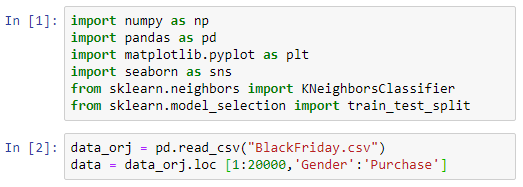
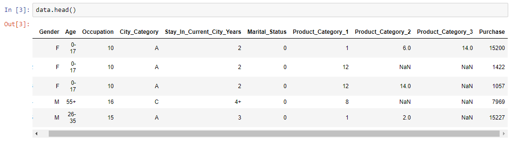
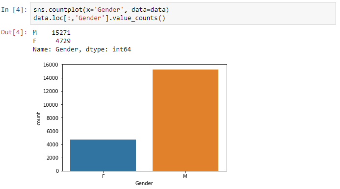
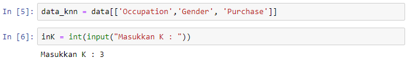
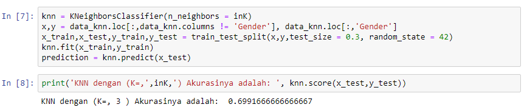
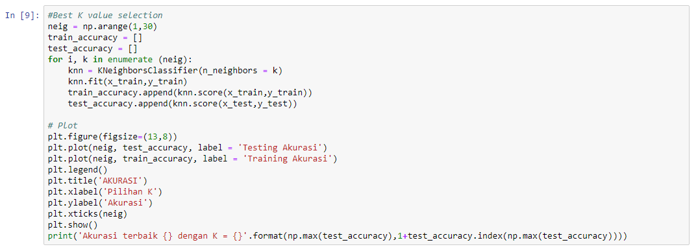
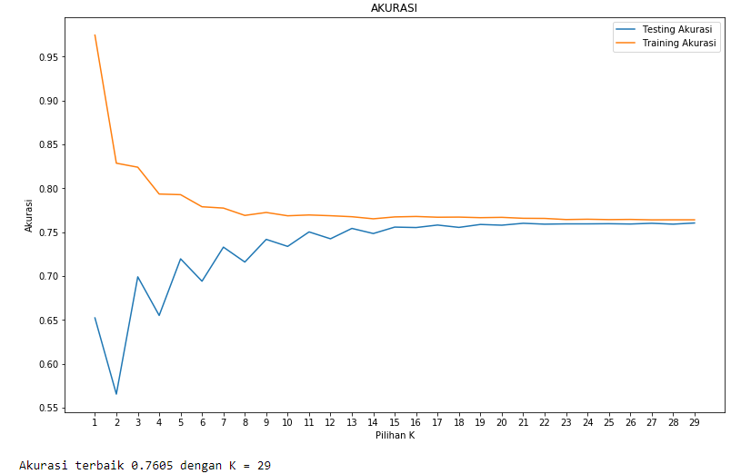

K-NEAREST NEIGHBOR¶
Algoritme k-nearest neighbor (k-NN atau KNN) adalah sebuah metode untuk melakukan klasifikasi terhadap objek berdasarkan data pembelajaran yang jaraknya paling dekat dengan objek tersebut.
Data pembelajaran diproyeksikan ke ruang berdimensi banyak, dimana masing-masing dimensi merepresentasikan fitur dari data. Ruang ini dibagi menjadi bagian-bagian berdasarkan klasifikasi data pembelajaran. Sebuah titik pada ruang ini ditandai kelas c jika kelas c merupakan klasifikasi yang paling banyak ditemui pada k buah tetangga terdekat titk tersebut. Dekat atau jauhnya tetangga biasanya dihitung berdasarkan jarak Euclidean.
Pada fase pembelajaran, algoritme ini hanya melakukan penyimpanan vektor-vektor fitur dan klasifikasi dari data pembelajaran. Pada fase klasifikasi, fitur-fitur yang sama dihitung untuk data test (yang klasifikasinya tidak diketahui). Jarak dari vektor yang baru ini terhadap seluruh vektor data pembelajaran dihitung, dan sejumlah k buah yang paling dekat diambil. Titik yang baru klasifikasinya diprediksikan termasuk pada klasifikasi terbanyak dari titik-titik tersebut.
Nilai k yang terbaik untuk algoritme ini tergantung pada data; secara umumnya, nilai k yang tinggi akan mengurangi efek noise pada klasifikasi, tetapi membuat batasan antara setiap klasifikasi menjadi lebih kabur. Nilai k yang bagus dapat dipilih dengan optimasi parameter, misalnya dengan menggunakan cross-validation. Kasus khusus di mana klasifikasi diprediksikan berdasarkan data pembelajaran yang paling dekat (dengan kata lain, k = 1) disebut algoritme nearest neighbor.
Ketepatan algoritme k-NN ini sangat dipengaruhi oleh ada atau tidaknya fitur-fitur yang tidak relevan, atau jika bobot fitur tersebut tidak setara dengan relevansinya terhadap klasifikasi. Riset terhadap algoritme ini sebagian besar membahas bagaimana memilih dan memberi bobot terhadap fitur, agar performa klasifikasi menjadi lebih baik.
Terdapat beberapa jenis algoritme pencarian tetangga terdekat, diantaranya:
· Linear scan
· Pohon kd
· Pohon Balltree
· Pohon metrik
· Locally-sensitive hashing (LSH)
Algoritme k-NN ini memiliki konsistensi yang kuat. Ketika jumlah data mendekati tak hingga, algoritme ini menjamin error rate yang tidak lebih dari dua kali Bayes error rate (error rate minimum untuk distribusi data tertentu).
TAHAPAN LANGKAH - LANGKAH ALGORITMA K-NN¶
- Menentukan parameter k (jumlah tetangga paling dekat).
- Menghitung kuadrat jarak eucliden objek terhadap data training yang diberikan.
- Mengurutkan hasil no 2 secara ascending (berurutan dari nilai tinggi ke rendah)
- Mengumpulkan kategori Y (Klasifikasi nearest neighbor berdasarkan nilai k)
- Dengan menggunakan kategori nearest neighbor yang paling mayoritas maka dapat dipredisikan kategori objek
PERHITUNGAN SEDERHANA¶
Terdapat beberapa data yang berasal dari survey questioner tentang klasifikasi kualitas kertas tissue apakah baik atau jelek, dengan objek training dibawah ini menggunakan dua attribute yaitu daya tahan terhadap asam dan kekuatan.
| X1 = Daya tahan asam (detik) | X2 = Kekuatan (Kg/m2) | Y = Klasifikasi |
|---|---|---|
| 8 | 4 | Baik |
| 4 | 5 | Jelek |
| 4 | 6 | Jelek |
| 7 | 7 | Baik |
| 5 | 6 | Jelek |
| 6 | 5 | Baik |
Akan diproduksi kembali kertas tissue dengan attribute X1=7 dan X2=4, tanpa harus mengeluarkan biaya untuk melakukan survey, maka dapat diklasifikasikan kertas tissue tersebut termasuk yang baik atau jelek.
| X1 = Daya tahan asam (detik) | X2 = Kekuatan (Kg/m2) | Square distance to query distance (7,4) |
|---|---|---|
| 8 | 4 | (8-7)2 + (4-4)2 = 1 |
| 4 | 5 | (4-7)2 + (5-4)2 = 10 |
| 4 | 6 | (4-7)2 + (6-4)2 = 13 |
| 7 | 7 | (7-7)2 + (7-4)2 = 9 |
| 5 | 6 | (5-7)2 + (6-4)2 = 8 |
| 6 | 5 | (6-7)2 + (5-4)2 = 2 |
| X1 = Daya tahan asam (detik) | X2 = Kekuatan (Kg/m2) | Square distance to query distance (7,4) | Urutan data dari terkecil | Kategori nearest neighbor |
|---|---|---|---|---|
| 8 | 4 | (8-7)2 + (4-4)2 = 1 | 1 | Baik |
| 4 | 5 | (4-7)2 + (5-4)2 = 10 | 5 | Jelek |
| 4 | 6 | (4-7)2 + (6-4)2 = 13 | 6 | Jelek |
| 7 | 7 | (7-7)2 + (7-4)2 = 9 | 4 | Baik |
| 5 | 6 | (5-7)2 + (6-4)2 = 8 | 3 | Jelek |
| 6 | 5 | (6-7)2 + (5-4)2 = 2 | 2 | Baik |
Dengan mengurutkan jarak terkecil pada kolom Urutan data dari terkecil yang didapat dari nilai Square distance to query distance, semisal diambil K=3, maka perbandingan nya adalah 2 (Baik) >1 (Jelek). Maka dapat disimpulkan kertas tissue dengan attribute X1=7 dan X2=4 masuk ke kelas Baik.
IMPLEMENTASI¶
Library yang diperlukan :¶
pip install numpy
pip install pandas
pip install sklearnLangkah - langkah :¶
Langkah 1 :
Import bahan-bahan / library yang diperlukan.
Langkah 2 :
Input data csv dengan pandas. Bata BlackFriday.csv berjumlah 537579, Tetapi saya hanya mengambil 20000 random data sebagai percobaan.

Langkah 3 :
Menampilkan sebagian data teratas.

Langkah 4 :
Menampilkan jumlah masing-masing Gender dan kolom Gender digunakan sebagai class nantinya.

Langkah 5 :
Jadi pada langkah ini saya hanya menggunakan 3 kolom : Occupation, Purcase, Gender. yang nanti digunakan pada langkah-langkah selanjutnya.
Langkah 6 :
Menginputkan banyaknya K.

Langkah 7 :
Mencari KNN dengan library sklearn.neighbors dengan diberikan nama alias KNeighborsClassifier.
dengan menginputkan K pada langkah ke 6 dengan nilai 3. maka dalam proses ini mencari 3 terdekat.
disini kita juga membedakan :
x = data Occupation dan Purchase.
y = class atau dalam data ini adalah Gender.
lalu membagi data 30% sebagai data testing dan 70% sebagai data training. dan memprediksi hasil asli data testing jika menggunakan K=3. begitupun jika menggunakan K dengan nilai lain.
Langkah 8 :
Menampilkan K yang diinputkan dan akurasi yang didapat.

Langkah 9 :
Pada langkah ini saya memberikan range / jarak 1 sampai 30 untuk mencari K terbaik dan akurasi terbaik. Sehingga saya melakukan pengulangan 1 - 30 dan mencari nilai akurasi tertinggi.

Menampilkan plot :

Sehingga dapatlah nilai K dan akurasi terbaik yaitu 29 dengan akurasi 0.7605.
Langkah 10 :
Pada langkah ini saya menggabungkan data testing,Gender dan prediction. sehingga kita dapat melihat hasil prediksi dari semua data.

NB : Data dan program dapat didownload DISINI